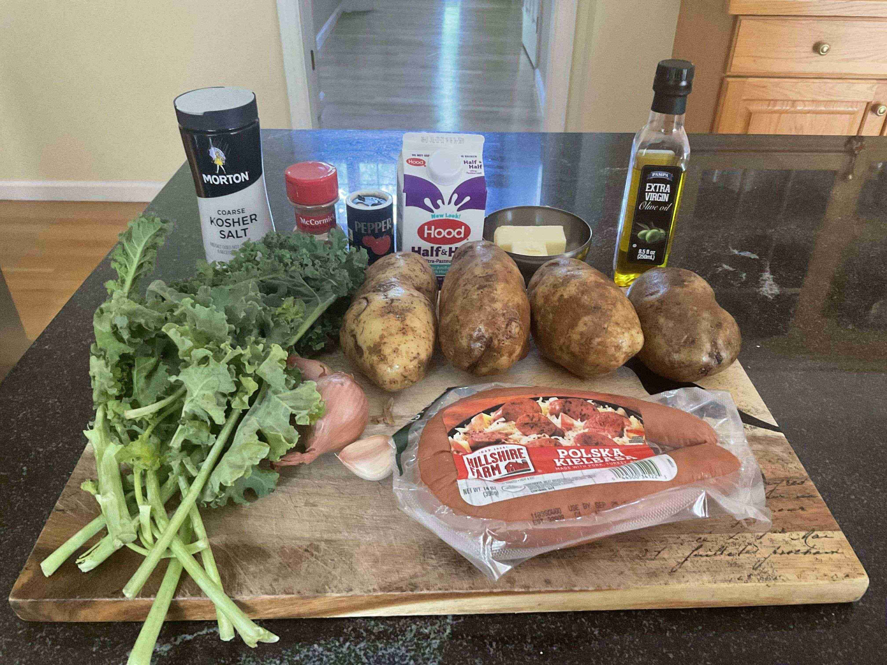

Stamppot (Netherlands)
 4-6 servings
4-6 servings 1 hour
1 hour-
 Gypsyplate
Gypsyplate
 Meat
Meat
My fourth recipe! Stamppot is a Dutch dish that is essentially mashed potatoes with vegetables. I decided to used kale as my vegetable and served it with kielbasa sausage. It was a very simple yet hearty dish, and I really enjoyed it! I especially liked the creaminess of the mashed potatoes and how it goes with the sausage.
Rating 7/10.
Preparation
3 lbrusset potatoes1 handfulkale2 clovesgarlic2shallots1 lbkielbasa sausage (or Dutch rookworst)
Skin and dice the potatoes into 1 inch cubes. Set aside.
Finely mince the garlic and shallots and place them in a bowl.
Remove the kale leaves from the stems and chop into inch sized pieces.
Slice the kielbasa sausage into pieces. Set aside.
Cooking
2 tbspbutter for cooking kale4 tbspbutter for mashed potatoes1 cuphalf and half1pinch of ground cinnamon- salt and pepper
1/4 cupwater
Surprisingly, this was my first time making mashed potatoes!
Add potatoes to a large pot, fill with cold water untill potatoes are covered, and salt the water like the ocean! Bring to a boil and cook for 20 minutes, then drain the water.
While the potatoes are cooking, heat 2 tbsp of butter in a pan on medium heat. Add the garlic and shallots and cook for 2 minutes. Add the kale and 1/4 cup water and steam with a lid for 5 minutes, until the kale is wilted. Set aside.
After draining the potato water, mash with butter, milk, salt, pepper, and ground cinnamon. Once smooth, stir in the kale mixture.
In the meantime, saute the kielbasa sausage in a pan until browned.
Serve with the mashed potato on the bottom and sausage laid ontop. Enjoy!
More Content!
Watch me roll the Netherlands on the country picker!
Credits to @toomanybites (my sister) for the main photo. Here are some more pictures throughout the process of cooking the stew. It was a very straightforward and easy process.
Ingredients!

Cooking the mashed potatoes!
Cooking the sausage!
Mixing the mashed potatoes!
Final product!!